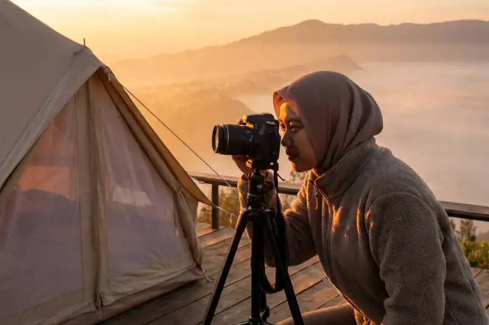

Strategi promosi wisata Jawa Timur dapat diperkuat dengan membangun narasi keunikan lokal, memanfaatkan promosi digital secara konsisten, dan meningkatkan kualitas layanan di setiap destinasi wisata.
Ringkasan Inti
- Penguatan identitas lokal menjadi langkah dasar sebelum menyusun strategi promosi wisata yang lebih luas.
- Promosi digital yang konsisten membantu memperkenalkan destinasi Jawa Timur kepada audiens yang lebih luas.
- Kolaborasi lintas sektor, termasuk pelaku usaha lokal, dapat memperkuat daya tarik destinasi wisata daerah.
- Peningkatan kualitas layanan dan infrastruktur turut memengaruhi persepsi positif wisatawan terhadap suatu destinasi.
- Evaluasi berkala terhadap tren wisatawan membantu strategi promosi tetap relevan dengan kebutuhan pasar.
1. Bagaimana Strategi Promosi Wisata Jawa Timur agar Lebih Dikenal?
Strategi promosi wisata Jawa Timur agar lebih dikenal dapat dilakukan dengan membangun narasi yang menonjolkan keunikan lokal serta memanfaatkan berbagai kanal digital secara konsisten.
Langkah-langkah yang dapat diterapkan:
- Identifikasi keunikan destinasi lokal yang membedakannya dari daerah lain, baik dari sisi alam, budaya, maupun kuliner.
- Susun narasi promosi yang konsisten agar audiens dapat mengenali identitas destinasi dengan mudah.
- Manfaatkan kanal digital seperti media sosial dan platform konten untuk menjangkau audiens yang lebih luas.
- Libatkan kreator konten lokal untuk membangun cerita autentik mengenai destinasi wisata Jawa Timur.

2. Apa Langkah Membangun Branding Destinasi Lokal yang Kuat?
Langkah membangun branding destinasi lokal yang kuat meliputi penentuan identitas visual, penyampaian nilai unik destinasi, serta konsistensi dalam setiap materi promosi yang digunakan.
Beberapa langkah yang dapat diterapkan pengelola destinasi:
- Tentukan identitas visual yang mencerminkan karakter khas destinasi, seperti warna, logo, atau elemen budaya lokal.
- Sampaikan nilai unik destinasi secara jelas dalam setiap materi promosi, baik foto, video, maupun narasi tertulis.
- Jaga konsistensi pesan di seluruh kanal promosi agar audiens memiliki persepsi yang seragam terhadap destinasi tersebut.
- Libatkan komunitas lokal dalam proses branding agar identitas yang dibangun terasa autentik dan berkelanjutan.
Menurut pengetahuan umum praktik branding destinasi wisata pada periode 2023-2025, daerah yang berhasil membangun identitas khas secara konsisten cenderung lebih mudah diingat wisatawan dibandingkan daerah yang hanya mengandalkan promosi jangka pendek tanpa narasi yang jelas.
3. Bagaimana Memanfaatkan Promosi Digital untuk Wisata Daerah?
Memanfaatkan promosi digital untuk wisata daerah dapat dilakukan dengan konsisten memproduksi konten visual, berkolaborasi dengan kreator lokal, serta memanfaatkan data untuk memahami preferensi audiens.
Beberapa pendekatan yang dapat diterapkan:
- Produksi konten visual berkualitas yang menampilkan keunikan destinasi secara autentik.
- Kolaborasi dengan kreator konten lokal untuk memperluas jangkauan promosi secara organik.
- Pemanfaatan data interaksi audiens untuk menyesuaikan strategi konten yang lebih relevan.
- Konsistensi jadwal publikasi konten agar destinasi tetap terlihat aktif di berbagai kanal digital.
4. Apa Kesalahan Umum dalam Strategi Promosi Wisata Daerah?
Kesalahan umum dalam strategi promosi wisata daerah terjadi ketika promosi hanya dilakukan secara musiman tanpa membangun narasi jangka panjang yang konsisten.
Beberapa kesalahan lain yang perlu dihindari:
- Terlalu fokus meniru gaya promosi daerah lain tanpa menonjolkan keunikan lokal sendiri.
- Tidak melibatkan komunitas dan pelaku usaha lokal dalam proses promosi destinasi.
- Mengabaikan evaluasi tren wisatawan sehingga strategi promosi menjadi kurang relevan dari waktu ke waktu.
Strategi promosi wisata Jawa Timur sebaiknya difokuskan pada penguatan identitas lokal, konsistensi narasi, dan pemanfaatan promosi digital secara berkelanjutan agar tidak sekadar membandingkan diri dengan Jawa Tengah dan Jogja. Pendekatan ini membantu membangun daya saing yang lebih berkelanjutan di industri pariwisata. Untuk memahami konteks perbandingan yang mendasari kebutuhan strategi ini, silakan simak pembahasan mengenai alasan audiens Jatim membandingkan dengan wisata Jawa Tengah dan Jogja serta ciri khas wisata Jawa Tengah dibandingkan Jawa Timur.
5. FAQ Seputar Strategi Promosi Wisata Jawa Timur
Abiyyu
Seorang penulis artikel yang sudah berpengalaman di dalam dunia wisata outbound Batu Malang.